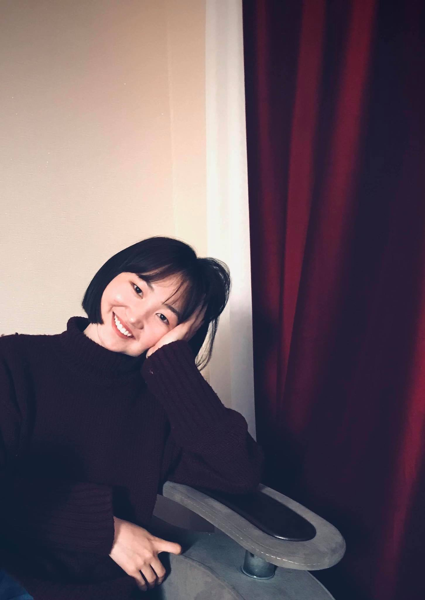

Welcome to the World of Munkhtsetseg
Гарчиг
Нүүр
Миний тухай
Миний хобби
Гэр бүл
Холбоо барих
Миний тухай
Нэр: Г.Мөнхцэцэг
Төрсөн өдөр: 2002 оны 6 сарын 26
Төрсөн газар: Увс аймаг Улаангом сум
Өссөн газар: Увс аймаг Улаангом сум
Төгссөн сургууль: Ерөнхий боловсролын 3-р сургууль
Сурч буй сургууль: Монгол улсын их сургууль
Суралцаж буй түвшин: 2
Сурч буй мэрэгжил: Програм хангамж
Миний хобби
Хобби гэдгийг хүмүүс маш олон утгаар ойлгодог гэж би бодож байна. Харин миний бодлоор хобби гэдэг ном унших, bujo хөтлөхөөс арай өөр. Нэг ёсондоо байнга хийдэг зүйлээс өөр гэж хэлж болох юм.
Миний хобби бол зураг зурах.


Магадгүй үүнийг уншаад та намайг маш сайн зураг зурдаг юм байна гэж ойлгож болох юм. Гэвч би тийм сайн зурдаггүй зүгээр л doodle эсвэл youtube дэх зураг зурах бичлэг дагаж зурдаг. Хобби бол хийж буй тэр зүйлээсээ таашаал авч сэтгэл хөдлөлийг нь тогтворжуулж өгдөг. Тиймдээ ч би зураг зурж байхдаа уурласан бол тайвширч, гомдсон бол сэтгэл онгойж ер нь л тайвшруулагч эм болдог.
Гэр бүл
Ээж, эгч, 2 дүүгийн хамт амьдардаг. Ээж минь цагаан өмсгөл өмссөн баатар. Харин эгч минь дөнгөж л оюутны ширээнээс амьдралд хөл тавин ажлын гараагаа эхэлсэн шинэхэн төгсөгч. Харин 2 дүү минь хоёулаа төгсөх ангийн сурагчид нэг нь 9-р ангиа нөгөө нь 12-р ангиа төгсөж байгаа.
Ээж: Мядагбадам
Эгч: Удвал
Эмэгтэй дүү: Сувд
Эрэгтэй дүү: Дөлгөөн
холбоо барих
Number: +97694196970
Gmail: Munktsetseg.ga@gmail.com
Facebook
SISI id: 20b1num1259